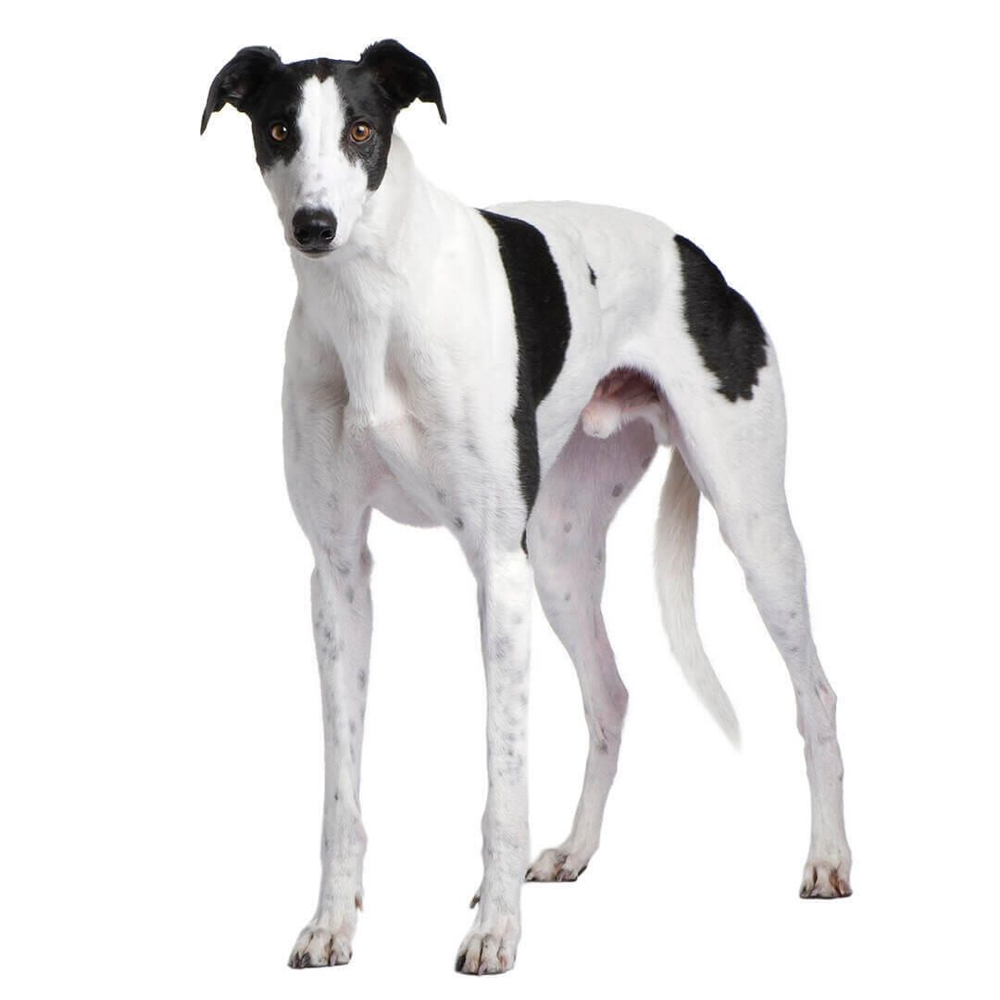

Los Galgos son como los caballos de carreras del mundo canino; son increíblemente rápidos, aristocráticos, gráciles y elegantes. Son perros bien proporcionados y de constitución fuerte. Su pelaje corto y fino puede ser de color negro, blanco, rojo, azul, leonado, atigrado o blanco. Los machos adultos miden entre 71 y 76 cm y pesan entre 30 y 32 kg, las hembras miden entre 69 y 71 cm y pesan entre 27 y 30 kg.
Estos perros son tranquilos y sociables en interiores y pueden mostrarse bastante vagos, incluso. Son perros sensibles que pueden ser mascotas ideales si tienen el dueño adecuado. Aunque son tranquilos por naturaleza, su instinto innato de caza sigue presente; su propietario debe estar dispuesto a asumir las responsabilidades que conlleva la raza. Son cariñosos con su familia, pero suelen ser distantes con los extraños. Suelen llevarse bien con los demás perros de la casa, pero los dueños de gatos deben extremar las precauciones.
El galgo es uno de los perros más apreciados: los faraones y otros reyes asiáticos y africanos tenían imágenes de este tipo de perros grabadas en sus tumbas desde el 4000 a. C. Se usaban para cazar antílopes, lobos y ciervos y llegaron a ser muy populares. Se extendieron por Oriente Próximo y Europa y, en algún momento, acabaron llegando a Gran Bretaña, donde se convirtieron en un símbolo de estatus. De hecho, tanto es así que en 1016 solo la élite podía permitirse tener un galgo. Se les utilizaba para cazar liebres y, más tarde, para hacer carreras, donde demostraron una vez más ser los perros más rápidos del mundo. En realidad, en el reino animal solo el guepardo puede superarlos en velocidad.
